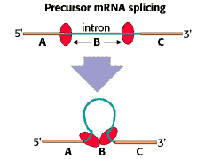

Eukaryotic Gene Expression Problem Set
Problem 6: Interpreting a pre-mRNA splicing diagram
Correct!
| The regions labeled A and C of the diagram are ___________________. |  |
A. introns B. snRNPs C. spliceosomes D. exons The 5'- and 3'-exons are separated by the intron. During the 2-step splicing reaction, the intron is removed and the exons are joined together.E. tRNAs


University of Arizona
Monday, October 27, 1997
Contact the Development Team
http://biology.arizona.edu
All contents copyright © 1997. All rights reserved.